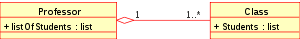
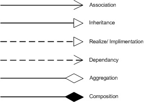

OO Concepts
Class
Construct that is used to define a distinct type. Usually represents a noun, such as a person, place or thing. Defines members that enable its instances to have state and behaviour.
Object
Instance of a class. Has identity, state and behaviour.
Method
Subroutine (or procedure) associated with a class. Define the behaviour to be exhibited by an object.
Attribute/Property
Variables associated with a class. Hold the data that define the state of an object.
Object composition
Way to combine simple objects into more complex ones
- Inheritance -- A "is" B, see Inheritance.
- Composition -- A "owns" B / A "has" B, B has no meaning or purpose in the system without A
- Aggregation -- A "uses" B, B exists independently (conceptually) from A
OO Features
Abstraction
The development of classes, objects and types in terms of their interfaces and functionality, instead of their implementation details.
Encapsulation
The bundling of data and hiding of data implementation by restricting access to some of the object's components. Enforces modularity which keeps routines separate and less prone to conflict
Inheritance
A way to establish Is-a relationships between objects. Classes (subclasses) can inherit attributes and behaviour from pre-existing classes (base classes). Allows less programming to be required and object to be re-used
Polymorphism
Literally "multiple forms". Allows values of different data types to be handled using a uniform interface.
- Ad hoc polymorphism -- allows a subroutines which can be applied to arguments of different types, but which behave differently depending on the type of the argument to which they are applied. e.g. method overloading, operator overloading.
- Parametric polymorphism -- allows a subroutines or a data type to be written generically, so that it can handle values identically without depending on their type. e.g. vector of int and vector of string both have a member function size.
- Subtype polymorphism -- allows a subroutine to be written to take an object of a certain type T, but also work correctly if passed an object that belongs to a type S that is a subtype of T. e.g. Triangle is a Shape
Class Diagram
A type of static structure diagram, in the Unified Modeling Language (UML), that describes the structure of a system by showing the system's classes, their attributes, methods, and the relationships among the classes.
Class relationships
Uxml Notation for logical connections between classes:
Member visibility
The following notations that must be placed before the member's (i.e., any attribute or method) name to specify its visibility:
- "" Public
- "" Private
- "" Protected
- "" Derived
- "" Static